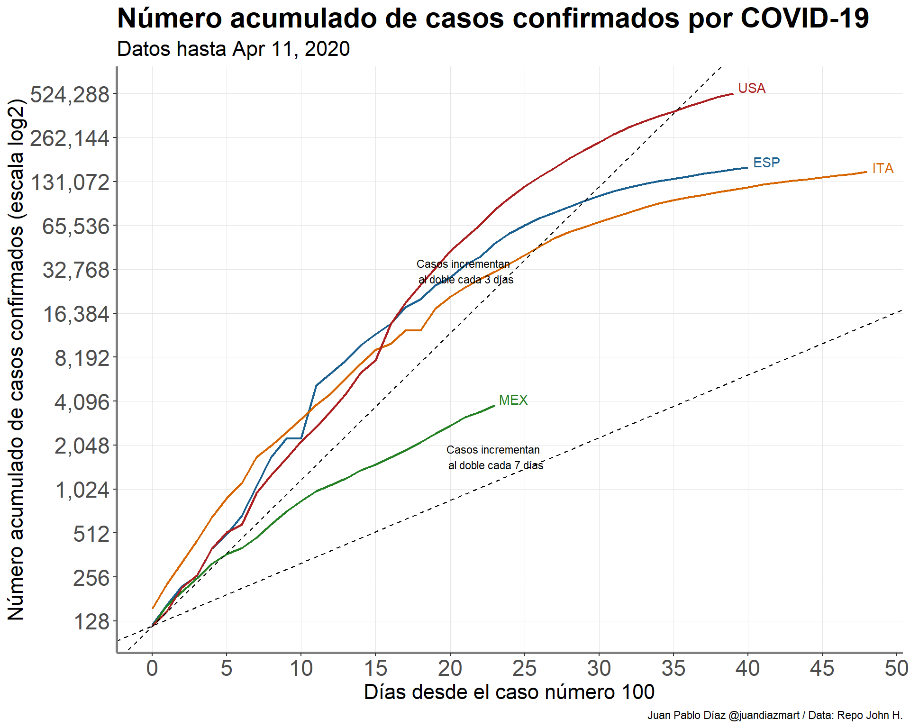
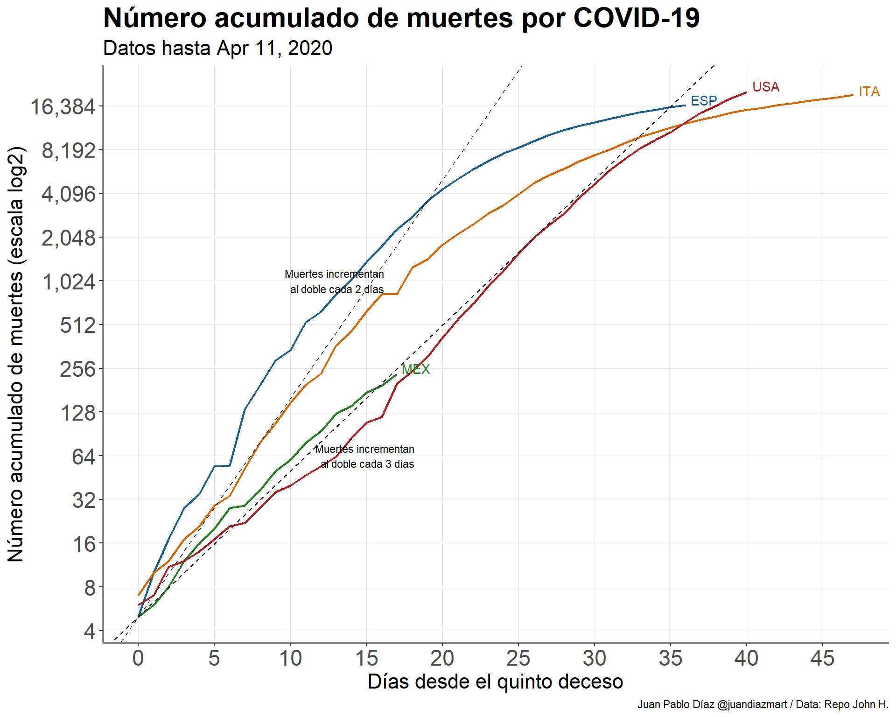

Table of Contents
Introducción
Este post nace despúes de 2 semanas de distanciamento social en Toronto, Canadá. Para los que no me conocen, actualmente soy doctorante en la Universidad de Toronto donde mi línea de investigación es el aprendizaje estadístico como herramienta de predicción en enfermedades que tienden a progresar a a través del tiempo (e.g. cáncer). Cuento con una posición de “Bioestadístico” en University Health Network el cual aglomera diferentes hospitales para una mejor colabaración en diferentes temas de investigación.
Es importante notar que este post no ha sido revisado por pares y que mi linea de investigación no es el modelaje de epidemias como la que vivimos ahorita. Este post tiene como objetivo discutir algunos aspectos importantes de la epidemia en nuestro país y hacer unas predicciones sencillas de lo que está por venir. Es importante notar que este análisis usa datos que se han capturado hasta Marzo 28. El link para el código de este post se encuentre en un repositorio de Github el cuál podrán encontrar al final de este post; las gráficas y el análisis fueron hechos en R, utilizando en su mayoría librerías como dplyr, ggplot2 y una serie de librerías que están aglomeradas en R Epidemics Consortium (RECON) suite.
Epidemia en México
Mucho se ha hablado en las conferencias vespertinas relacionadas a COVID-19 acerca del número de casos nuevos desde que la epidemia llegó a nuestro país y si el gobierno ha hecho pruebas suficientes. Antes de describir de cualquier análisis es importante describir dos aspectos importrantes respecto a las características epidemiológicas en nuestro país: 1. Cómo funciona el sistema epidemiológico 2. Como se alimenta diariamente el número de casos confirmados
Sistema epidemiológico en México
El Dr. Hugo López Gatell ha mencionada en muchísimas ocasiones como funciona el sistema centinela en nuestro país (la siguiente entrevista es muestra de lo anterior). A manera de resumen, la idea del programa es que “en vez de recopilar grandes cantidades de datos de calidad deficiente, hay que concentrarse en recopilar datos de buena calidad de un número reducido de centros centinela seleccionados cuidadosamente”, de acuerdo al documento de la OMS actualizado en 2014. El proceso es buscar COVID-19 en pacientes negativos a la prueba de influenza para ver si hay transmisión comunitaria; Alberto Díaz Cayeros hace una descripción de éste y discute posibles fallas que pueden ocurrir en este sistema.
Este sistema funcionó para H1N1 en el 2009 y todos esperamos que funcione para COVID-19. ¿Por qué utilizar este sistema y no pruebas masivas como lo hizo Corea del Sur? Creo que es por dos razones: el sistema ha funcionado y es eficiente debido las limitaciones de recursos en Salud en nuestro país. Es importante aclarar que estas limitaciones no son nuevas y es producto de un porcentaje muy bajo del gasto en el sector salud como porcentaje del PIB durante varios años de acuerdo a la OCDE.
Casos confirmados
El 28 de febrero fue confirmado el primer paciente con COVID-19 en nuestro país. Desde el 23 de marzo se han modificado los criterios operacionales para la vigilancia epidemiológica de COVID-19. Como se ha mencionado en diferentes medio de comunicación (nota aquí) la definición es la siguiente:
Caso sospechoso - Persona de cualquier edad que en los últimos siete días haya presentado al menos dos síntomas de tos, fiebre o cefalea, es decir, dolor de cabeza intenso y persistente y que esté acompañado de los siguientes signos: dificultad para respirar, hinchazón en articulaciones con dificultad de movimiento, dolor muscular, ardor de garganta, rinorrea, conjuntivitis y dolor de tórax.
Caso confirmado - Persona que cumpla lo anterior y que cuente con confirmación del InDRE.
Asimismo, se modificó el porcentaje de muestreo para vigilar los casos de COVID-19. Solo se realizará la prueba al 10% de los casos sospechosos sin síntomas o síntomas leves. A su vez, se realizará la prueba al 100% de los casos sospechosos con sintomología grave o que cumplan con la definición infección respiratoria aguda grave (IRAG). Es importante recalcar que el gobierno ha recalcado que todos los casos sospechosos sin importar si se les realizó la prueba deberán de permanecer en aislamiento .
Análisis de la epidemia en México
Antes de presentar datos y gráficas me gustaría enfatizar en 2 aspectos importantes al considerar la presentación y análisis de datos de casos confirmados con COVID-19:
- La comparación entre países (e.g. incidencia acumulada) debe de realizarse con mucho cuidado. Esto debido a lo expuesto en la sección anterior; los países tienen distintos sistemas epidemiológicos y diferentes recursos, por lo tanto la cantidad de casos confirmados está en función de la cantidad de pruebas que puedan realizar. Es muy importante recalcar esto ya que esta comparación es la que más noticias engañosas y falsas que al menos yo he encontrado en redes sociales (ver aquí).
- La comparación entre países debe de realizarze desde un punto en común en el tiempo ya que la epidemia entra a cada país en momentos distintos. Esto tiene mucha importancia sobre todo al presentar gráficas e ilustraciones ya sea para mostrar la incidencia (casos nuevos) o incidencia acumulada.
¿Qué sí podemos rescatar cuando comparamos casos confirmados entre diferentes países?. La siguiente gráfica muestra el número de casos confirmados acumulados con COVID-19 desde que se comfirmó el paciente número 100. Decidí transformar el eje de las \(y\) al aplicarle el logaritmo base 2; esta transformación ayuda a una mejor interpretación de los datos ya que es más fácil para el lector ver cuanto tiempo se tarda un país en tener el doble de casos confirmados en un periodo determinado de tiempo. Asimismo al transformar los datos la serie de tiempo presenta un comportamiento más lneal.

México desde que llegó el caso número 100 ha tenido un incremento al doble de casos confirmados cada 3 días, con una ligera pendiente menor después de 5 días desde que llegó a su caso 100. Al final es esta pendiente la que queremos que se haga 0, es decir, aplastarla para que la curva de casos acumulados se “aplane”. Si queremos comparar países no nos fijemos en el número de casos acumulados. Fijémonos mejor en sus pendientes y como éstas cambian a través del tiempo. Si los procedimientos epidemiológicos descritos anterormente no cambian, la pendiente de México podría incrementar si por ejemplo aumentan considerablemente los casos graves.
Dado que es difícil comparar casos confirmados por todo lo explicado en párrafos previos, pienso que es más fácil comparar el número de muertes1. La siguiente gráfica nos ayuda a entender el comportamiento de número de muertes acumuladas en nuestro país desde que se presentó la quinta muerta.

Estos datos son los que personalmente me preocupan ya que México podría llegar a 4,000 muertos aproximadamente 20 días después del quinto deceso si las muertes incremental al doble cada 2 días (mismo caso que España). Volvemos al punto central que discutí en los datos de casos confirmados, lo importante es ver cuánto cambia la pendiente a través del tiempo. Hay que tener en cuenta que muchas de las muertes no serán diagnosticadas como muertes por COVID-19 (eso pasa en México y en otros países), por eso mientras el aumento sea constante no habría de preocuparse por esta sub-estimación.
Estimación del número de infectados y del impacto de Susana Distancia.
Debido a la naturaleza e importancia de la enfermedad, diferentes revistas indexadas en el mundo han acelerado su proceso de revisión para poder publicar diferentes artículos académicos referentes al SARS-COV 19. A mí siempre me han llamado la atención aquellos artículos que describen modelos de predicción.
En la sección anterior mencioné que es mejor utilizar el número de muertes si queremos hacer algún tipo de comparación o inferencia. Algunas limitaciones de este número son:
- Posible sub-estimación de muertes por COVID 19 - Esto debido a que habrá casos donde SARS-COV 19 no haya sido identificado.
- Posible retraso en la captura de muertes - Hemos visto en algunas conferencias vespertinas casos donde la confirmación de SARS-COV 19 llega después del fallecimiento.
Estas limitaciones no afectarán ningún modelo o inferencia que se quiera realizar siempre y cuando ambas se mantengan constantes en el tiempo.
¿De qué manera se puede estimar el número de infectados y el impacto de las medidas realizadas por el gobierno federal para incentivar el distanciamiento social? Utizando la historia natural de la enfermedad.

Figure 1: Forecast algorithm
Recordemos que a todos los graves sí se les realiza la prueba↩